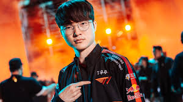
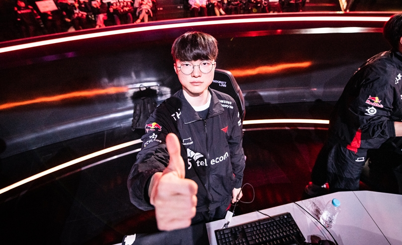
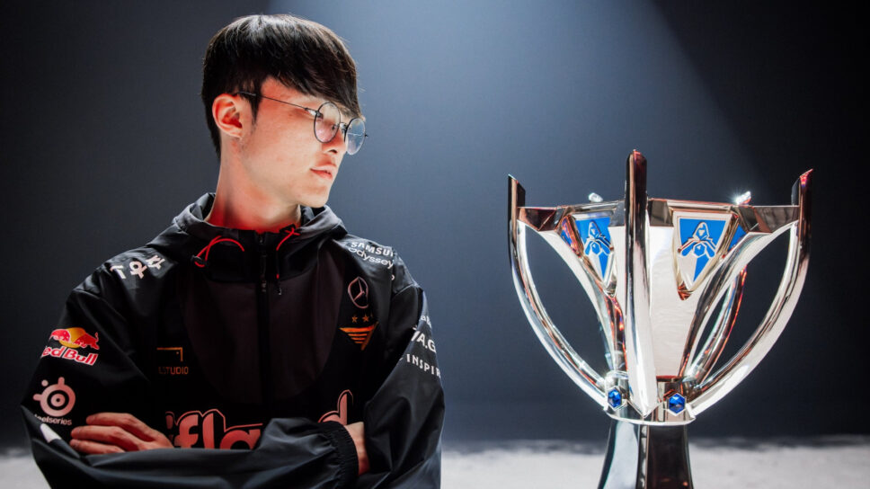

Faker's Dominance in the Quarterfinals

What a performance! As a die-hard League of Legends fan, I can't help but be in awe of what we just witnessed in the 2023 World Championships quarterfinals. The GOAT himself, Faker, along with his T1 squad, absolutely demolished LNG in a clean 3-0 sweep. It was a masterclass in League of Legends, and it couldn't have come at a better time for Korean fans like myself.
Let's face it, this Worlds hasn't been kind to the LCK. We've seen our teams fall one by one, with Gen.G, KT Rolster, and Dplus KIA all bowing out earlier than expected. It's been a tough pill to swallow for a region that's used to dominating the international stage. But just when things were looking bleak, Faker and T1 stepped up to remind everyone why Korea is still a force to be reckoned with.
The series against LNG was nothing short of spectacular. From the very first game, it was clear that Faker came to play. His lane control, roaming, and teamfight positioning were impeccable. Whether he was on Azir, Orianna, or Akali, Faker's presence on the map was felt everywhere. He was always one step ahead, anticipating LNG's moves and countering them with surgical precision.
But it wasn't just Faker carrying the team. The entire T1 roster showed up big time. Gumayusi and Keria's botlane synergy was off the charts, consistently getting advantages in the 2v2 and translating that into mid-game pressure. Zeus in the top lane was a rock, absorbing pressure and still managing to be a threat in teamfights. And let's not forget about Oner in the jungle, whose pathing and ganking were crucial in setting up T1's early game leads.
What impressed me most was T1's macro play. Their vision control, objective setups, and map movements were simply on another level. LNG, despite being a strong team in their own right, looked completely lost at times. It was like watching a grandmaster play chess against an amateur - T1 always seemed to be three moves ahead.
This victory means so much more than just advancing to the semifinals. With T1 being the last Korean team standing, they're carrying the hopes and dreams of an entire region on their shoulders. The pressure must be immense, but if there's anyone who can handle it, it's Faker. He's been here before, multiple times, and his experience in high-stakes situations is unmatched.
Looking ahead to the semifinals, I'm filled with both excitement and nervousness. The competition is only going to get tougher from here on out, but after this performance, I truly believe T1 has what it takes to go all the way. Faker seems more determined than ever to claim his fourth Worlds title, and honestly, who would bet against him?
As a fan, it's moments like these that remind me why I fell in love with competitive League of Legends in the first place. The skill, the strategy, the drama - it's all here. And at the center of it all is Faker, the undisputed GOAT, still showing the world that he's the best to ever do it.
So here's to T1 and Faker, Korea's last hope. May they continue to dominate and bring the Summoner's Cup back to the LCK. The road ahead is tough, but after what we've seen in the quarterfinals, I wouldn't have it any other way. Let's go T1! Let's go Faker! The dream is still alive!
Read more about Faker’s Quarterfinals performance
The Greatest Upset of All Time

Unbelievable. Absolutely unbelievable. What we just witnessed in the 2023 League of Legends World Championship semifinals was nothing short of miraculous. Faker and T1, against all odds, have taken down the seemingly invincible JDG superteam in a stunning 3-1 victory. But let's talk about THAT moment - Faker's game-changing Azir ultimate in game 3 that turned the tide of not just the game, but possibly the entire series.
First, let's set the stage. JDG, the LPL superteam that hadn't lost a best-of-5 all year, were looking to close out game 3 and take a 2-1 lead in the series. The game was on a knife's edge, with both teams dancing around Baron, looking for that perfect engage. And then, in a split second, it happened.
Faker, the Unkillable Demon King himself, saw an opening that perhaps only he could see. With the precision of a surgeon and the boldness of a true champion, he maneuvered his Azir into position. The tension was palpable. You could feel millions of viewers around the world holding their breath.
And then, in a flash of sand soldiers and Shuriman glory, Faker unleashed the Emperor's Divide. The wall of soldiers swept across the river, catching not just any player, but Ruler - JDG's star AD carry and arguably the best in the world - completely off guard. Ruler, known for his impeccable positioning, found himself suddenly thrust into the midst of T1, separated from his team.
The collective gasp from the crowd was audible even through the broadcast. Faker had done it again. In that moment, he didn't just use Azir's ultimate - he rewrote the script of the entire series.
What followed was a masterclass in teamfighting from T1. With Ruler isolated, they pounced. The coordination was immaculate, the damage output relentless. In a matter of seconds, JDG's main carry was deleted from the map, and with him went JDG's chances in that game.
But it wasn't just the mechanical execution that was impressive. It was the audacity of the play, the sheer confidence required to pull it off on such a stage. This wasn't just any game - this was the semifinals of Worlds, against the tournament favorites. The pressure was enormous, but Faker, as he has done so many times in his illustrious career, rose to the occasion.
That single play encapsulated everything that makes Faker the GOAT of League of Legends. The vision to see the opportunity, the skill to execute it flawlessly, and the mental fortitude to attempt such a high-risk, high-reward play in a crucial moment. It was Faker at his finest, reminding everyone why he's considered the best to ever touch the game.
As the dust settled and T1 closed out the game, you could feel the momentum of the entire series shift. JDG, the undefeated giants, suddenly looked mortal. And T1, led by their legendary mid laner, seemed to grow ten feet tall.
Looking back, that Azir ultimate wasn't just a great play - it was a statement. Faker was telling the world, "I'm still here, and I'm still the best." It was a play that will be remembered for years to come, replayed in highlight reels and discussed in reverent tones by fans and analysts alike.
As we look forward to the finals, one thing is clear: Faker is not done yet. That Azir play was a reminder of his brilliance, his ability to change the course of a game - and a series - in an instant. It's moments like these that remind us why we love esports, and why Faker will always be considered the greatest of all time.
The dream of a fourth Worlds title for Faker is very much alive. And after witnessing that Azir ultimate, who in their right mind would bet against him? The Unkillable Demon King has risen once again, and the League of Legends world is all the better for it.
Read more about Faker’s knockout stage impact
The Final Showdown: Faker vs. the Last of the LPL

Speechless. Absolutely speechless. What we witnessed in the 2023 League of Legends World Championship finals was nothing short of legendary. Faker and T1 have done it again, crushing Weibo Gaming in a dominant 3-0 sweep that will go down in the annals of esports history. The Unkillable Demon King has claimed his fourth Worlds title, cementing his status as the undisputed GOAT of League of Legends.
From the very first game, it was clear that T1 came to play. The synergy between all five members was off the charts. Zeus was a monster in the top lane, consistently finding advantages and translating them into team-wide leads. Oner's jungle pathing was immaculate, always seeming to be in the right place at the right time. And the bot lane duo of Gumayusi and Keria? Simply unstoppable.
But at the center of it all, as always, was Faker. His performance throughout the series was nothing short of masterful. Whether he was on Azir, Akali, or Orianna, Faker's presence on the map was felt everywhere. His roams were perfectly timed, his teamfight positioning was impeccable, and his decision-making under pressure was, as always, second to none.
Game 2 of the series stands out in my mind. Faker's Akali was a thing of beauty. The way he danced in and out of teamfights, assassinating key targets and then disappearing into his shroud, was like watching a ballet of death. There was a moment when he dove into the backline, took out both Weibo's ADC and support, and then escaped with a sliver of health. The crowd erupted, and I swear I could feel the energy through my screen at home.
What impressed me most about T1's performance was their macro play. Their vision control and objective setups were simply on another level. Weibo Gaming, despite being a strong team in their own right, looked completely lost at times. It was like watching a grandmaster play chess against an amateur - T1 always seemed to be three moves ahead.
As the Nexus exploded in Game 3 and T1's victory was confirmed, I couldn't help but feel a mix of joy, awe, and a touch of nostalgia. This wasn't just a win; this was a statement. Faker and T1 didn't just beat Weibo Gaming; they dismantled them. They exposed weaknesses that no one thought existed in this strong LPL team.
My only regret from this incredible final is that Faker didn't win the MVP award. Don't get me wrong, Zeus's performance was phenomenal and he's certainly deserving, but in my heart, this was Faker's tournament. The way he led his team, not just through the finals but the entire tournament, was nothing short of inspirational. His leadership, his clutch plays, and his unwavering mental fortitude were the backbone of T1's success.
This victory means so much more than just another title. It's Faker's fourth World Championship, extending his lead as the most decorated player in League history. At 27 years old, an age where many pros have already retired, he's still at the top of his game, still breaking records, still setting the standard for what it means to be a professional League of Legends player.
As a fan, it's moments like these that remind me why I fell in love with competitive League of Legends in the first place. The skill, the strategy, the drama - it's all here. And at the center of it all is Faker, the undisputed GOAT, still showing the world that he's the best to ever do it.
So here's to Faker and T1, our 2023 World Champions. They've brought the Summoner's Cup back to the LCK in style. As we close this chapter of League of Legends history, one thing is clear: the era of Faker is far from over. Long live the Unkillable Demon King!
Read more about Faker’s role in the World Championship final